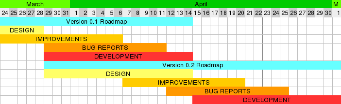

Get Involved
Thank you for helping me (hopefully us soon) create TreeTodo
Schedule
Design: New features or goals may be set in design phase. All major changes must be planned here.
Improvements: Small changes / improvements may be proposed.
Bug reports: Bug reports until deadline will be fixed in this release.
Development: Phase to implement Design & Improvements and fix bugs.
What can you do?
TreeTodo is still making its baby steps, so there is something for everyone.
I will publish instructions for developers soon, but you can start by shooting me a mail.
Design
You can help designing TreeTodo by creating issues on this GitHub page about your improvement ideas.
Test and report bugs
Use TreeTodo, find out which parts do not work correctly. Finding and reporting bugs (tip: create an issue!) is very helpful for a project.
Develop
Help coding TreeTodo. If you are interested, please do not hesitate to contact me
Translate
Right now, TreeTodo is English only, but you can help translate it even if you have no idea about programming.